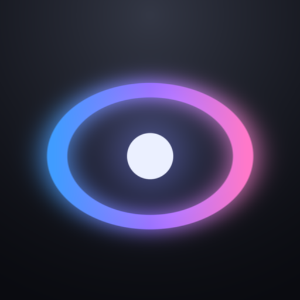

Lumi灵眸
看懂眼前的一切
为智能眼镜设计的视觉助手。现在用手机就能体验：摄像头是眼镜的眼睛，屏幕是镜片。
它能做什么
常用功能都在你的设备上运行，不联网也能用。
🙂
读懂心情
实时识别八种表情，判断不准时会老实说“不确定”，还会给出一段时间的整体心情。
本机运行🎯
教它认识你
录几秒你自己的表情，Lumi 会按你的习惯来判断，越用越准。
本机运行📦
认出物体
实时标出 80 类常见物体，点一下标签直接上网搜索。
本机运行🗺️
地标和地图
显示你所在位置和附近地标，转头时会标出你正对着的那一个。
需要联网✨
AI 识别
看不懂的东西点一下，由大模型说出品牌、型号、品种或建筑名，并标明把握程度。
需要自己的 API 密钥👓
双眼模式
左右分屏显示，把手机放进 VR 眼镜盒，提前体验戴着眼镜看的感觉。
本机运行装到手机上
添加到主屏幕后，Lumi 会像普通 App 一样全屏打开。
iPhone（Safari）
- 用 Safari 打开这个网页
- 点底部的分享按钮
- 选添加到主屏幕，再点添加
Android（Chrome）
- 用 Chrome 打开这个网页
- 点右上角的⋮菜单
- 选安装应用或添加到主屏幕
隐私
心情、个性化训练、物体识别都只在你的设备上计算，画面不会上传。
点物体标签搜索时只发送物体名称；开启「地标地图」时会把位置发给地图和百科服务；点「AI 识别」时会把当前一帧画面发给 Anthropic 的 Claude 模型。
Lumi 只描述看得见的东西，不会认出画面里的人是谁。请只对同意被识别的人使用。